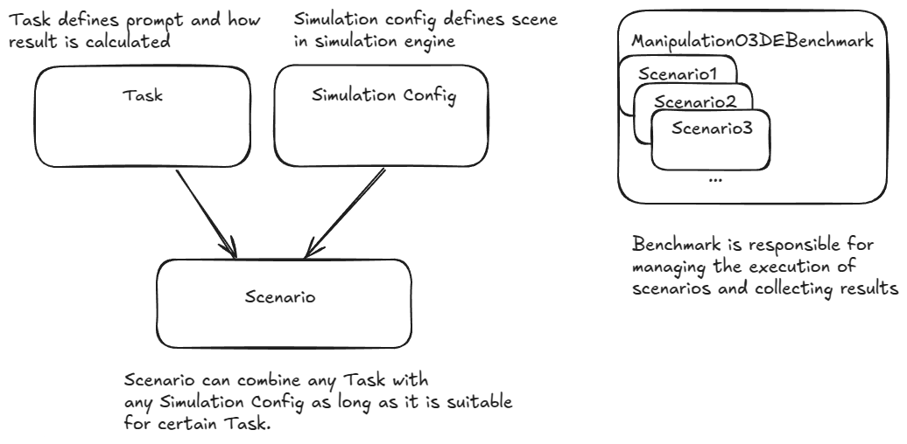
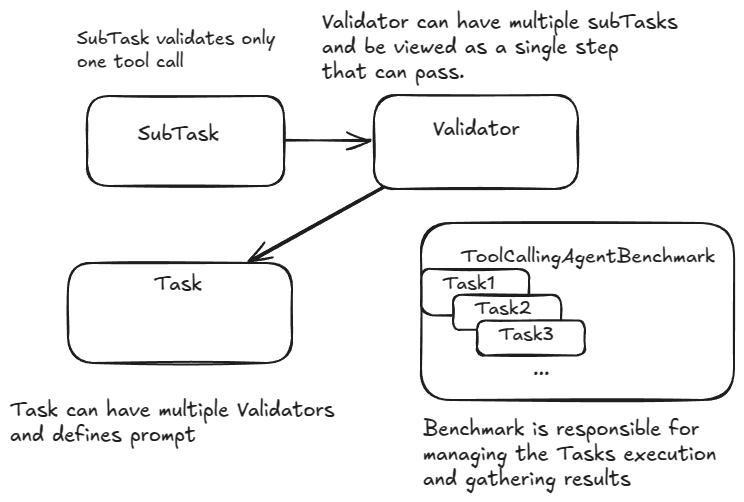

RAI Bench¶
RAI Bench is a comprehensive package that both provides benchmarks with ready-to-use tasks and offers a framework for creating new tasks. It's designed to evaluate the performance of AI agents in various environments.
Available Benchmarks¶
Manipulation O3DE Benchmark¶
Evaluates agent performance in robotic arm manipulation tasks within the O3DE simulation environment. The benchmark evaluates how well agents can process sensor data and use tools to manipulate objects in the environment.
Framework Components¶
Manipulation O3DE Benchmark provides a framework for creating custom tasks and scenarios with these core components:

Task¶
The Task class is an abstract base class that defines the interface for tasks used in this benchmark.
Each concrete Task must implement:
- prompts that will be passed to the agent
- validation of simulation configurations
- calculating results based on scene state
Scenario¶
A Scenario represents a specific test case combining:
- A task to be executed
- A simulation configuration
ManipulationO3DEBenchmark¶
The ManipulationO3DEBenchmark class manages the execution of scenarios and collects results. It provides:
- Scenario execution management
- Performance metrics tracking
- Logs and results
- Robotic stack needed, provided as
LaunchDescription
Available Tasks¶
The benchmark includes several predefined manipulation tasks:
-
MoveObjectsToLeftTask - Move specified objects to the left side of the table
-
PlaceObjectAtCoordTask - Place specified objects at specific coordinates
-
PlaceCubesTask - Place specified cubes adjacent to each other
-
BuildCubeTowerTask - Stack specified cubes to form a tower
-
GroupObjectsTask - Group specified objects of specified types together
Tasks are parametrizable so you can configure which objects should be manipulated and how much precision is needed to complete a task.
Tasks are scored on a scale from 0.0 to 1.0, where:
- 0.0 indicates no improvement or worse placement than the starting one
- 1.0 indicates perfect completion
The score is typically calculated as:
score = (correctly_placed_now - correctly_placed_initially) / initially_incorrect
Available Scene Configs and Scenarios¶
You can find predefined scene configs in rai_bench/manipulation_o3de/predefined/configs/.
Predefined scenarios can be imported, for example, choosing tasks by difficulty:
from rai_bench.manipulation_o3de import get_scenarios
get_scenarios(levels=["easy", "medium"])
Tool Calling Agent Benchmark¶
Evaluates agent performance independently from any simulation, based only on tool calls that the agent makes. To make it independent from simulations, this benchmark introduces tool mocks which can be adjusted for different tasks. This makes the benchmark more universal and a lot faster.
Framework Components¶

SubTask¶
The SubTask class is used to validate just one tool call. Following classes are available:
CheckArgsToolCallSubTask- verify if a certain tool was called with expected argumentsCheckTopicFieldsToolCallSubTask- verify if a message published to ROS2 topic was of proper type and included expected fieldsCheckServiceFieldsToolCallSubTask- verify if a message published to ROS2 service was of proper type and included expected fieldsCheckActionFieldsToolCallSubTask- verify if a message published to ROS2 action was of proper type and included expected fields
Validator¶
The Validator class can combine single or multiple subtasks to create a single validation step. Following validators are available:
- OrderedCallsValidator - requires a strict order of subtasks. The next subtask will be validated only when the previous one was completed. Validator passes when all subtasks pass.
- NotOrderedCallsValidator - doesn't enforce order of subtasks. Every subtask will be validated against every tool call. Validator passes when all subtasks pass.
- OneFromManyValidator - passes when any one of the given subtasks passes.
Task¶
A Task represents a specific prompts and set of tools available. A list of validators is assigned to validate the performance.
Task class definition
rai_bench.tool_calling_agent.interfaces.Task
¶
Bases: ABC
Source code in rai_bench/tool_calling_agent/interfaces.py
492 493 494 495 496 497 498 499 500 501 502 503 504 505 506 507 508 509 510 511 512 513 514 515 516 517 518 519 520 521 522 523 524 525 526 527 528 529 530 531 532 533 534 535 536 537 538 539 540 541 542 543 544 545 546 547 548 549 550 551 552 553 554 555 556 557 558 559 560 561 562 563 564 565 566 567 568 569 570 571 572 573 574 575 576 577 578 579 580 581 582 583 584 585 586 587 588 589 590 591 592 593 594 595 596 597 598 599 600 601 602 603 604 605 606 607 608 609 610 611 612 613 614 615 616 617 618 619 620 621 622 623 624 625 626 627 628 629 630 631 632 633 634 635 636 637 638 639 640 641 642 643 644 645 646 647 648 649 650 651 | |
additional_calls
property
¶
number of additional calls that can be done to still pass task. Includes extra tool calls params. and optional tool calls number which depends on task.
available_tools
abstractmethod
property
¶
List of tool available for the agent
max_tool_calls_number
property
¶
maxiumum number of call to still pass task. Includes extra tool calls params. and optional tool calls number which depends on task.
optional_tool_calls_number
abstractmethod
property
¶
Optional tool calls means calls that are not considered error. For example listing topics at the beginning.
required_calls
property
¶
Minimal number of calls required to complete task
__init__(validators, task_args, logger=None)
¶
Abstract base class representing a complete task to be validated.
A Task consists of multiple Validators, where each Validator can be treated as a single step that is scored atomically. Each Task has a consistent prompt and available tools, with validation methods that can be parameterized.
Attributes:
| Name | Type | Description |
|---|---|---|
complexity |
Literal['easy', 'medium', 'hard']
|
difficulty level of the task |
type |
str
|
type identifier for the task |
recursion_limit |
(int, optional)
|
maximum recursion depth allowed, by default DEFAULT_RECURSION_LIMIT |
Parameters:
| Name | Type | Description | Default |
|---|---|---|---|
validators
|
List[Validator]
|
List of validators that will be applied in sequence. |
required |
task_args
|
TaskArgs
|
Configuration parameters for the task specified by user |
required |
logger
|
Logger
|
Logger for recording task validation results and errors. |
None
|
Source code in rai_bench/tool_calling_agent/interfaces.py
497 498 499 500 501 502 503 504 505 506 507 508 509 510 511 512 513 514 515 516 517 518 519 520 521 522 523 524 525 526 527 528 529 530 531 532 533 534 535 | |
get_base_prompt()
abstractmethod
¶
Get the base task instruciton, it will be used to identify task in results processing
Source code in rai_bench/tool_calling_agent/interfaces.py
615 616 617 618 619 620 621 | |
get_prompt()
abstractmethod
¶
Get the task instruction - the prompt that will be passed to agent.
Returns:
| Type | Description |
|---|---|
str
|
Prompt |
Source code in rai_bench/tool_calling_agent/interfaces.py
623 624 625 626 627 628 629 630 631 632 | |
get_system_prompt()
abstractmethod
¶
Get the system prompt that will be passed to agent
Returns:
| Type | Description |
|---|---|
str
|
System prompt |
Source code in rai_bench/tool_calling_agent/interfaces.py
604 605 606 607 608 609 610 611 612 613 | |
get_tool_calls_from_invoke(response)
¶
Extracts all tool calls from the response, flattened across all AI messages.
Source code in rai_bench/tool_calling_agent/interfaces.py
542 543 544 545 546 547 548 | |
get_tool_calls_from_messages(messages)
¶
Extracts all tool calls from the response, flattened across all AI messages.
Source code in rai_bench/tool_calling_agent/interfaces.py
550 551 552 553 554 555 556 557 558 | |
validate(tool_calls)
¶
Validate a list of tool calls against all validators in sequence
Source code in rai_bench/tool_calling_agent/interfaces.py
634 635 636 637 638 639 640 641 642 643 644 645 646 647 648 649 650 651 | |
As you can see, the framework is very flexible. Any SubTask can be combined into any Validator that can be later assigned to any Task.
Every Task needs to define it's prompt and system prompt, what tools agent will have available, how many tool calls are required to complete it and how many optional tool calls are possible.
Optional tool calls mean that a certain tool calls is not obligatory to pass the Task, but shoudn't be considered an error, example: GetROS2RGBCameraTask which has prompt: Get RGB camera image. requires making one tool call with get_ros2_image tool. But listing topics before doing it is a valid approach, so in this case opitonal tool calls is 1.
ToolCallingAgentBenchmark¶
The ToolCallingAgentBenchmark class manages the execution of tasks and collects results.
Available Tasks¶
There are predefined Tasks available which are grouped by categories:
- Basic - require retrieving info from certain topics
- Manipulation
- Custom Interfaces - requires using messages with custom interfaces
Every Task has assigned the complexity which reflects the difficulty.
When creating a Task, you can define few params:
class TaskArgs(BaseModel):
"""Holds the configurations specified by user"""
extra_tool_calls: int = 0
prompt_detail: Literal["brief", "descriptive"] = "brief"
examples_in_system_prompt: Literal[0, 2, 5] = 0
-
examples_in_system_prompt - How many examples there are in system prompts, example:
0:You are a ROS 2 expert that want to solve tasks. You have access to various tools that allow you to query the ROS 2 system. Be proactive and use the tools to answer questions.2:You are a ROS 2 expert that want to solve tasks. You have access to various tools that allow you to query the ROS 2 system. Be proactive and use the tools to answer questions. Example of tool calls: get_ros2_message_interface, args: {'msg_type': 'geometry_msgs/msg/Twist'} publish_ros2_message, args: {'topic': '/cmd_vel', 'message_type': 'geometry_msgs/msg/Twist', 'message': {linear: {x: 0.5, y: 0.0, z: 0.0}, angular: {x: 0.0, y: 0.0, z: 1.0}}}
-
prompt_detail - How descriptive should the Task prompt be, example:
brief: "Get all camera images"-
descriptive: "Get all camera images from all available camera sources in the system. This includes both RGB color images and depth images. You can discover what camera topics are available and capture images from each."Descriptive prompts provides guidance and tips.
-
extra_tool_calls - How many extra tool calls an agent can make and still pass the Task, example:
GetROS2RGBCameraTaskhas 1 required tool call and 1 optional. Whenextra_tool_callsset to 5, agent can correct himself couple times and still pass even with 7 tool calls. There can be 2 types of invalid tool calls, first when the tool is used incorrectly and agent receives an error - this allows him to correct himself easier. Second type is when tool is called properly but it is not the tool that should be called or it is called with wrong params. In this case agent won't get any error so it will be harder for him to correct, but BOTH of these cases are counted asextra tool call.
If you want to know details about every task, visit rai_bench/tool_calling_agent/tasks
VLM Benchmark¶
The VLM Benchmark is a benchmark for VLM models. It includes a set of tasks containing questions related to images and evaluates the performance of the agent that returns the answer in the structured format.
Running¶
To run the benchmark:
cd rai
source setup_shell.sh
python src/rai_bench/rai_bench/examples/vlm_benchmark.py --model-name gemma3:4b --vendor ollama